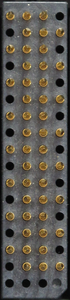
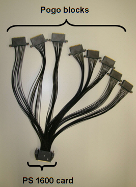

PS1600 pogo cable assembly E8030PSD: 8 SD pogo blocks
The E8030PSD long pogo cable assembly connects the 128 channels of a PS1600 card via 8 standard-density (SD) pogo blocks to the DUT board.
This pogo cable has one 128-pin connector at one end to connect to the PS1600 card and eight 16-pin pogo blocks at the other end. This allows you to have up to 1408 digital pins using the standard card filling scheme and 2048 pins with the non-standard scheme.
Basic data and pogo block
|
 |
|
The standard pogo pin layout uses 16 pins per pogo block as usual. Hence, for a complete PS1600 card you need eight pogo blocks making a total of 128 pins.
Pogo cable assembly

Functional changes
- Introduced in SmarTest 7.1.0
- SmarTest 7.3.2: Support of PS1600B